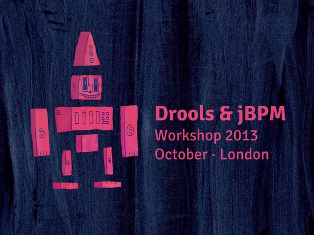
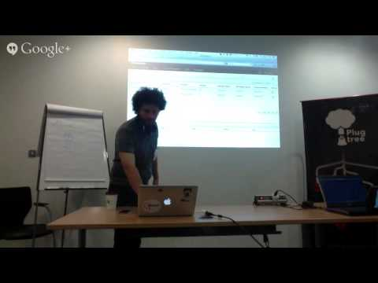

RESULTS: DROOLS & JBPM WORKSHOPS (LONDON)
RESULTS: DROOLS & JBPM WORKSHOPS (LONDON)
Hi everyone out there, I’m writing this post just to share the slides from the Drools & jBPM workshops that we (Michael Anstis and I) did this week in central London. Hopefully we can host more of these workshops in other cities. If you are interested in running one of these workshops get in contact and we can help you to set it up.
Here are the slides, and the video for the second day.
Slides

Video: Day 2 – JBPM and KIE Projects

Special thanks to @mbitencourt for broadcasting the event!
Related Posts
Look at the following posts if you are interested to read about the content of the workshops.
- Human Resources Example
- Customer Relationships Example (work in progress)
- KIE Workbenchs Configurations
All the examples that I’ve demonstrated in the workshops are hosted in this repository:
Feedback
One of the main purposes behind doing these workshops was to collect feedback from the developers before the Final Community release. We manage to identify three major bugs which were identified and will be fixed for the final release, so I would like to thank you everyone out there who has tested the application and gave feedback about it.
If you want to try it out, read my related posts or get in contact with me so I can guide you to try the KIE Workbench.